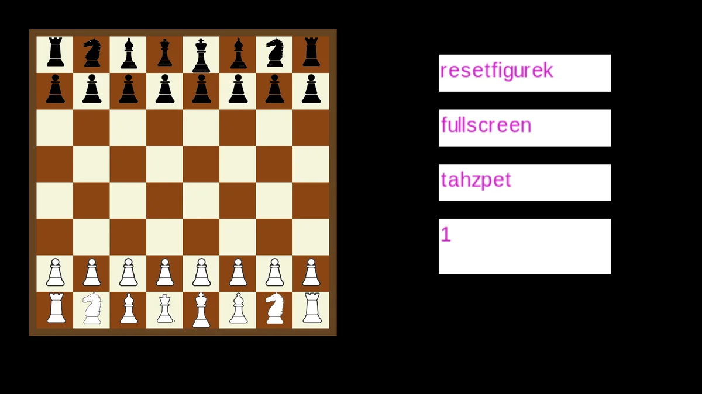

C++ / Search / Game AI
Chess
A chess project in C++ and SDL with my own engine. The computer combines iterative deepening, parallel root search, negamax with alpha-beta pruning, quiescence search, and a Zobrist-keyed transposition table.
Open repository